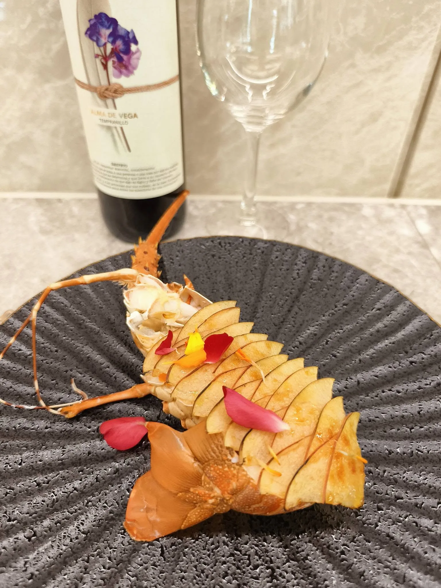

很多人以為 Fine Dining 就是「貴的食材加上精緻擺盤」，但真正在星級餐廳工作過的主廚都知道，Fine Dining 的核心其實是「完整的體驗設計」。從賓客入座的那一刻起，燈光、節奏、每一道菜出現的時間點、服務人員的應對方式，都是經過設計的——目的是讓賓客在整場用餐過程中，感受到層層堆疊的驚喜與放鬆感，而不只是「吃到好吃的東西」。
把這種體驗帶回家，挑戰在於：家裡沒有米其林餐廳的廚房設備、沒有受過專業訓練的外場團隊，也沒有經過反覆調校的出菜動線。這正是到府私廚存在的意義——把整套星級餐廳的後台系統，濃縮成可以移動到您家中的服務。
星級餐廳最重視的往往不是「食材多貴」，而是「食材夠不夠新鮮、來源夠不夠明確」。選用可追溯的高端食材，例如日本 A5 和牛、當季直送海鮮、活體龍蝦，讓每一口都有明確的風味邏輯，而不是單純堆疊昂貴食材的清單。主廚在設計菜單時，會依照當季食材的最佳狀態來調整菜色，而不是硬性套用固定菜單。
Fine Dining 與外燴最大的差異，就在於「現場」這兩個字。主廚團隊會攜帶專業爐具與器材，在您指定的場地現場料理，而不是在中央廚房備好後加熱送達。像牛排的三分熟精準控制、海鮮的現煎現裝盤，這些細節只有現場烹調才能做到，也是決定整體用餐體驗高下的關鍵。
每一道菜的擺盤，都應該像一件小型藝術品——顏色的對比、食材的堆疊層次、醬汁的收邊線條，都是經過設計的視覺語言。好的擺盤不只是「好看」，更能引導賓客用什麼樣的順序品嚐這道菜，強化整體風味的表達。
Fine Dining 講究「節奏」——前菜到主菜之間需要適當的間隔，讓味蕾休息與轉換；甜點的出現時間點，也要考量賓客的飽足感與整體用餐情緒曲線。這也是為什麼到府私廚服務通常會配置專門控場的服務人員，確保每一道菜都在賓客最佳的品嚐狀態下端上桌，而不是一股腦全部上齊。
依照賓客的飲食偏好、節日主題、場合風格（求婚、生日、商務接待、家族聚餐），設計專屬菜單，是家庭版 Fine Dining 最大的優勢——比起固定菜單的餐廳，到府私廚可以完全圍繞「這場宴會的主角與目的」來規劃每一道菜的意義。
舒苑飲食文化｜Luxury Private Chef的主廚團隊，會在服務前先與您討論場合性質、賓客人數與飲食偏好，接著攜帶專業爐具、餐具與食材，到您指定場域完整重現星級餐廳的節奏與氛圍。從前菜、主菜到甜點，每一個細節都由主廚林東立親自把關菜單設計，讓在家宴客也能有五星級的完整體驗，而不只是「找人來家裡煮飯」。
求婚或紀念日晚宴：私密空間加上精緻節奏，能讓重要時刻更有儀式感。
董事長／VIP 商務宴請：展現品味與規格，同時保有商務洽談所需的隱私與彈性。
家族慶生或長輩壽宴：在熟悉的家中環境，享受星級餐廳等級的料理與服務，長輩不需奔波。
更多服務內容請參考 服務項目 頁面，或直接與我們洽談您的專屬 Fine Dining 餐宴計畫。
讓我們把專業主廚星級的餐宴帶進您的府上。